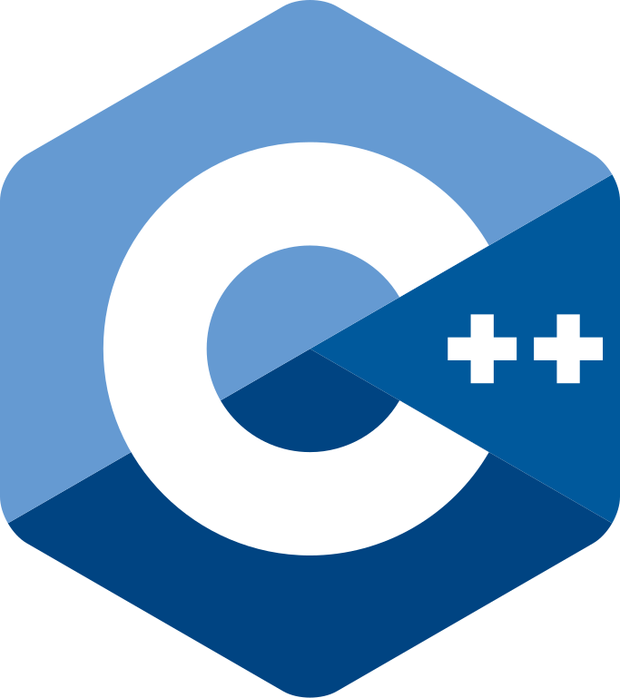

home | misc | lore | cars | poptart | music | boat | projectz | shopz | newz
by
using this, you are ruining your vafelkis.github.io experience, you can find all of the
links in other pages. [they are easter eggs/secrets]
hi, reader :) i have scrapped the previous site and turned it into a seperate page [cars-related], since that was the main topic
there either way. ANYHOW! also, full navbar is unlocked here, bcuz if i want to show around, its easier
than to explain all the easter eggs, so :P
katrewkate
est. 2023
note
this page is not like others, and will probably lack some personality, but i do not really care, because i dont think i should fit personality into something this serious lmao :(intro more or les
i feel like since the initial release of the website, i kind of dropped a basic introduction, but never got deeper into it, but oh well :P i guess here i will put most of the stuff that i want to write about myself, or just me-stuff. so, if you are reading this, im already grateful you are taking interest in me for some reason :Pabout me, fr this time
i am 17 yrs old at the time of writing this, i will soon be 18, so if its 2025 oct, i am 18 already! Woohoo! happy birthday to me :3 hehe, jokes aside. my life is not that remarkable, and i dont really know what to put here, or even, what i could put here, since this is a public website and thats that haha. oh well.before this website, ALSO HI AGAIN
before i could even dream of building my own website and having all of this power, i firstly must briefly talk about me and computers. tbh, i myself have no idea how i came to use computers, i guess when i was little, my dad introduced me to an old laptop that had games and shi, and i started playing there.eventually, i ended up learning how to use a computer, how to operate apps and keyboards, how to use mouse, i learned the basics, eventually i fell in love with a game called minecraft, and i wanted to mod it, and had a bunch of funny experiences about me thinking i had to complete some tasks or something IN MINECRAFT in order to unlock mods, as if it were some DLC, sadly however, this was false. so eventually i employed my dad who knows russian to download mods for me, and he sadly failed and i had lost hope of ever modding a game. but then i came across a tutorial to download aether mod, and it actually worked [besides me freaking out that my pc froze after installing it... ouch]. and that was my first experience with mods, then with time i got my own personal computer [specs n stuff mentioned later, probably?] for 800 Euro on the 18th day of September 2019.
eventually i met some people on Discord, and we got to chatting, and at some point, after countless failed interactions and my cringy username [MangoModz... damn, rip.] eventually changing to [REDACTED], i met some people that i kind of clicked with, and i was pretty close with. at that point, covid was starting to conquer the globe, and we were all in lockdown. at some point, as a joke i decided to play around with discord bots and coding, and quite quickly realized, that i had no idea what the fuck i was doing.
at some point, i met a certain ginger [who went by Sokoladinis for a while], and got invited to a discord server [litva], where i was recruited to create a discord bot for the server, however me being an egoistic mf, i took up the offer despite desperately struggling with my previous bot LOL, but somehow, it actually worked out very well, and i got the grasp of coding in ctictactoe pretty quickly, and then, something had clicked?
at a certain point, after having eaten 16 counts of i see creamz [ice cream, ifykyk], i realized, that i had a pretty good understanding of it, and enjoyed it a lot, which is surprising, because i always had considered myself "EH" at best when it came to coding, and had largely thought it wasnt a me thing. so then, i started coding more bots, and over five years, ive made multiple bots that were pretty well received and loved, possibly shaping memories for many, which, i am quite proud of.
arnd 2021/2022, i met a certain food item named pancake, mf was enlightened with the most fire knowledge about coding, and apparently i had become a disciple at some point haha :) [hi btw] and i was lucky enough to have been enlightened with basic html/css knowledge, which eventually lead to the creation of my first website, which was just anarchy LOL. ANYHOW, the next website was named vafelkis wiki [or katwiki], where i documented my own stuff more or less, and it was a project i quite loved, and even the "MAIN" pages of this website are directly inspired from the katwiki. at some point, i found out about github.io pages, and i ended up creating one, and slowly making my way to where i am now.
faqqqq
- what is the future of this website?
i dont know, but im hoping that this website wont be a project limited to only this year, and that it will be developed for a while, and technically, i think thats the most likely outcome, because i have so much shi to add here, its nuts - are you sigma?
si senor - why is this site in english?
idk, i learned english at a young age, and i guess its more universally understood than my native language [LIETUVAAAAAA], i in no sense want to disrespect my own country/language, but simply put, i think english makes the most sense, and i cannot be bothered to rewrite the same stuff three times. ;'( - why is lore page a remix of this page?
one cannot blame the lion for sleeping at night. oh, sorry, wrong page... my bad. Okay, so, bro, not all remixes are bad. and surely, a kat page remix isnt that bad, have you truly checked it out?
if you are reading this, you have been infekted by
der googelwirusen :)
about me, again
hi, i am katrewkate, i have five million usernames/nicknames, anyhow. pc specs:-
pc specs
- 4x8gb adata d10 xpg 3200mhz c16
- gigabyte gtx 1660 6gb
- amd ryzen 5 2600
- gigabyte b450 aorus elite
- antec 650w power supply monitors
- asus vg259qm 1920x1080 at 280hz [1st, main]
- aoc g2590vxq 1920x1080 at 75hz [2nd]
- samsung s24f350 1920x1080 at 60hz [3rd] accessories
- glorious model o- [one of the best mice ive had]
- hyperx quadcast s
- hyperx cloud ii [would recommend :)]
- xbox 360 controller, xbox one controller
- ps3 + 4 controllers
- xxl mousepad
- logitech g29
- oculus quest 2 keyboards
- krux crato [pro?] rgb [brown switches]
- savio tempest rx tkl outemu [red switches]
- royal kludge rk61 [brown switches] personal note: browns are my favorite, reds are meh, blues are good but are too loud.
- fl studio [pretty ok]
- driving!
- tbd
- coding
 c# [mastered more or less]
c# [mastered more or less] python [pretty good]
python [pretty good] javascript [meh]
javascript [meh]-  c++ [also meh, but ok, good enough to carry my teammates in it class;) so good in fact i can get paid for my work. aint that exquisite.]
 html, kind of?
html, kind of? css [pretty good too!]
css [pretty good too!]
 lithuanian [native, 1st]
lithuanian [native, 1st] english (us mostly) [almost native,
2nd]
english (us mostly) [almost native,
2nd] russian [3rd, but not that good :(]
russian [3rd, but not that good :(]
unity and faith, peace and progress.
credits
pancake / aninternetuser0 ~ big thanks for having
contributed to my projects, being a good sport, sticking around even during the most
troubled times. i truly cannot be grateful enough for having been taught and encouraged
by the man himself.
parents ~ for having me and encouraging me, despite everything, supporting and lowkey providing me with the ability to even be writing this. and no, mom, i wont be getting off the pc today ;)
microsoft [n mojang] ~ for having created vscode [insiders ftw], developing modern day minecraft, i shit on microsoft a lot, but at the end of the day, idk if this website would be possible without em.
vlc [medialan team] ~ call me what you want, and fuck satan for thinking this app sucks, its absolutely awesome. even as im talking, vlc is blasting music in the background, so yes, i will stay #teamvlc until i die, because idk any other music player that has the same functionality, while also being fast, light, reliable and stable!
sokoladinis, litva members ~ despite sokoladinis probably never having the opportunity to read this, or even know about this, and even if we dont talk anymore, i am grateful for the fun memories we created during the litva times, and its been truly a ride, also, idk if me not having met you would have resulted in the timeline that exists now. and to litva members, THX FOR HAVING ME :)
discord ~ as much as i wish this website didnt exist anymore, i still have to thank discord for making a lot of memories possible, and even being my first introduction into coding, and also meeting new faces!
github ~ for making this project possible and awesome as is, and also hosting my first ever public site, thx GITTIES! :3
creators of python, c#, html, css, http protocols, tcp, and god knows wat else ~ this website and other projects also wouldnt be possible without all of the creators and people who spent hours making protocols, clients and shi. So thank you all!
katrewkate yt team :) ~ a group of individuals that usually appear in katrewkate videos, and is probably one of the coolest friend groups i have ever participated in, thank you mates <3 while not directly linked to this website, i still thank yall for your feedback and love :)
creators of assets that arent mine ~ for every asset, that is, fonts, images, songs, gifs etc, that i havent made myself, i am eternally grateful, and while i cant fully credit each one of you, i do not claim to be the author of the gifs used, nor the fonts, etc.
republic of lithuania ~ country i resided
in my whole life, and i love eternally, without lithuania, idk if this
website would even be possible, or if anything else ive ever done could
be possible. <3
paint.net / photoshop ~ for asset modification, logos and stuff. and always remember, its morally correct to pirate adobe.
eurobeat [discopolo, or just music in general] ~ music is a big part of everything i do, i guess its sort of a tradition at this point, when im coding or doing just about anything besides talking to people, i almost always listen to music, so yeh. i like eurobeat especially, because i refound it after finding a song in 2022 from one of the mixes, idk how i decided to listen to eurobeat again, but i tried, and i got kind of hooked, i love the genre because its just vibey and dance-like, ANYHOW, i also listened to eurobeat a lot during the peak of my life, so i guess in a sense its more than just a genre to me personally:P
youtube ~ because.. tutorials... fun stuff... yayy......
beamng.drive ~ the best car game ever, and lowkey my favorite game [along with rainbow six siege], SO YEAH! why do i shout em out? idk, i figured out how to do skins and stuff there, so.... hehehe.
fight club (1999) ~ fight club was the first movie i ever watched on my own, i think? and i watched it at lowkey a low point of my life, and it kind of gave me a few perspectives, and in general encouraged my bish ahh to get out of my den and not die without any scars.
katvodka ~ the greatest and healthiest vodka brand to date, gave me 10/10 hallucinations and funded half of this website. [/j/j/j/j/j]
parents ~ for having me and encouraging me, despite everything, supporting and lowkey providing me with the ability to even be writing this. and no, mom, i wont be getting off the pc today ;)
microsoft [n mojang] ~ for having created vscode [insiders ftw], developing modern day minecraft, i shit on microsoft a lot, but at the end of the day, idk if this website would be possible without em.
vlc [medialan team] ~ call me what you want, and fuck satan for thinking this app sucks, its absolutely awesome. even as im talking, vlc is blasting music in the background, so yes, i will stay #teamvlc until i die, because idk any other music player that has the same functionality, while also being fast, light, reliable and stable!
sokoladinis, litva members ~ despite sokoladinis probably never having the opportunity to read this, or even know about this, and even if we dont talk anymore, i am grateful for the fun memories we created during the litva times, and its been truly a ride, also, idk if me not having met you would have resulted in the timeline that exists now. and to litva members, THX FOR HAVING ME :)
discord ~ as much as i wish this website didnt exist anymore, i still have to thank discord for making a lot of memories possible, and even being my first introduction into coding, and also meeting new faces!
github ~ for making this project possible and awesome as is, and also hosting my first ever public site, thx GITTIES! :3
creators of python, c#, html, css, http protocols, tcp, and god knows wat else ~ this website and other projects also wouldnt be possible without all of the creators and people who spent hours making protocols, clients and shi. So thank you all!
katrewkate yt team :) ~ a group of individuals that usually appear in katrewkate videos, and is probably one of the coolest friend groups i have ever participated in, thank you mates <3 while not directly linked to this website, i still thank yall for your feedback and love :)
creators of assets that arent mine ~ for every asset, that is, fonts, images, songs, gifs etc, that i havent made myself, i am eternally grateful, and while i cant fully credit each one of you, i do not claim to be the author of the gifs used, nor the fonts, etc.
paint.net / photoshop ~ for asset modification, logos and stuff. and always remember, its morally correct to pirate adobe.
eurobeat [discopolo, or just music in general] ~ music is a big part of everything i do, i guess its sort of a tradition at this point, when im coding or doing just about anything besides talking to people, i almost always listen to music, so yeh. i like eurobeat especially, because i refound it after finding a song in 2022 from one of the mixes, idk how i decided to listen to eurobeat again, but i tried, and i got kind of hooked, i love the genre because its just vibey and dance-like, ANYHOW, i also listened to eurobeat a lot during the peak of my life, so i guess in a sense its more than just a genre to me personally:P
youtube ~ because.. tutorials... fun stuff... yayy......
beamng.drive ~ the best car game ever, and lowkey my favorite game [along with rainbow six siege], SO YEAH! why do i shout em out? idk, i figured out how to do skins and stuff there, so.... hehehe.
fight club (1999) ~ fight club was the first movie i ever watched on my own, i think? and i watched it at lowkey a low point of my life, and it kind of gave me a few perspectives, and in general encouraged my bish ahh to get out of my den and not die without any scars.
katvodka ~ the greatest and healthiest vodka brand to date, gave me 10/10 hallucinations and funded half of this website. [/j/j/j/j/j]